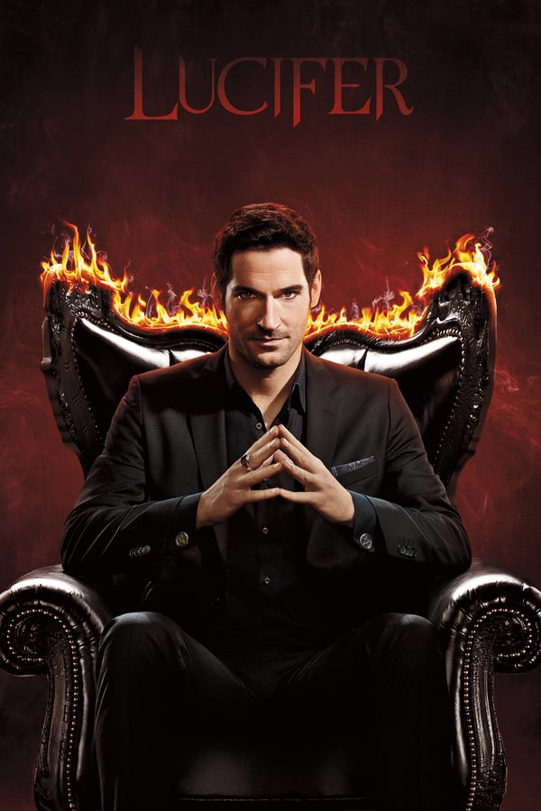

Cobra Kai
Esta sequência de Karate Kid pega 30 anos depois dos eventos do All Valley Karate Tournament de 1984 e encontra Johnny Lawrence em busca de redenção reabrindo o infame dojo de karate Cobra Kai . Isso reacende sua antiga rivalidade com o bem-sucedido Daniel LaRusso, que vem trabalhado para manter o equilíbrio em sua vida sem o seu mentor Miyagi.

